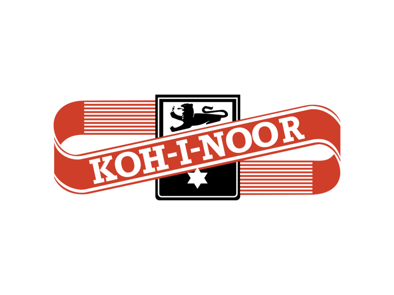
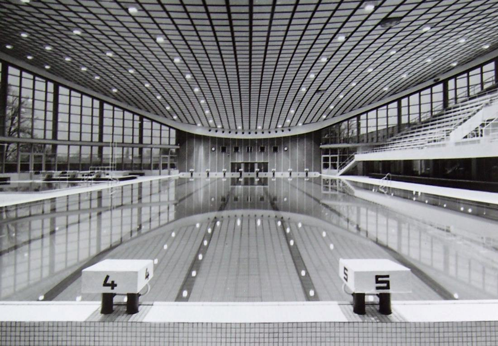
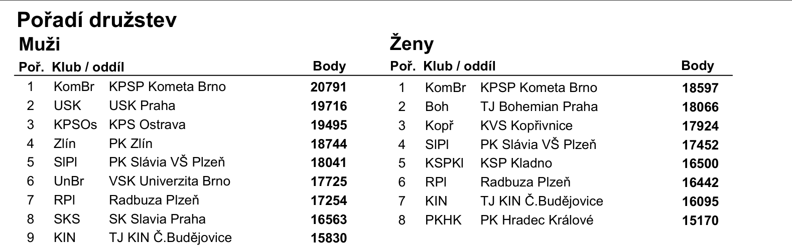
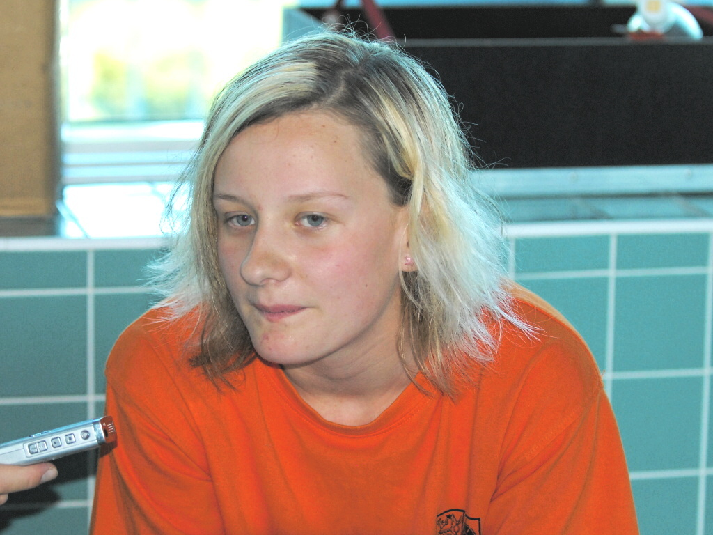
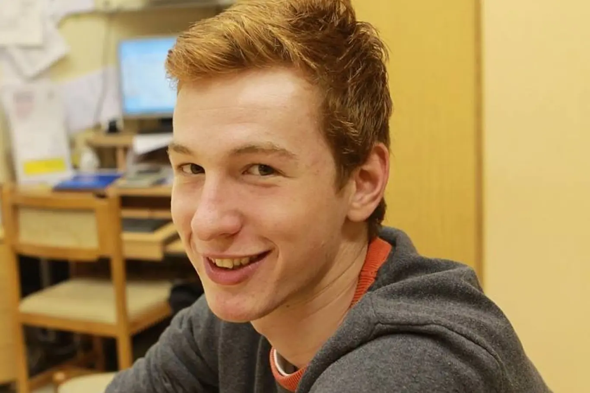
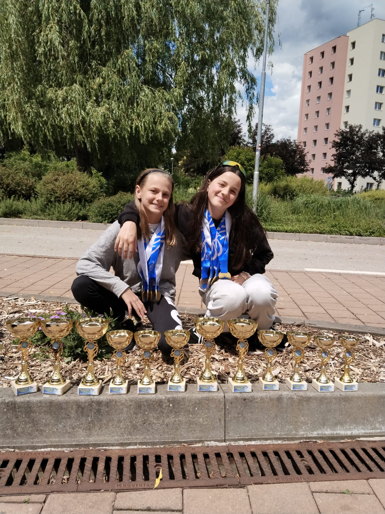

Naše historie
Příběh psaný vodou od roku 1951
Příběh psaný vodou od roku 1951
Podívejte se na klíčové okamžiky, které formovaly náš klub do dnešní podoby.

Pod vedením Vlasty Potužníkové vzniká nový plavecký oddíl z učňů n. p. Koh-i-noor a žaček Matice školské.

Po 20ti letech snahy se díky Dr. Ing. Josefu Potužníkovi otevírá nová krytá plovárna. Svého času nejmodernější plavecký areál ve Střední Evropě.
Postup mužského a ženského týmu do 1. celostátní Federální ligy.
Poprvé zvolena předsedkyní plaveckých sportů, následně i celé Tělovýchovné jednoty KIN. Předsedkyní je dodnes.

Březinová Eva (1987), Dušková Petra (1971), Dvořáková Tereza (1987), Hájková Aneta (1989), Hradilová Naďa (1987), Chlupová Šárka (1990), Marková Miroslava (1987), Palečková Andrea (1991), Reitingerová Zuzana (1991), Tunková Kateřina (1992), Vondrášková Lucie (1991)
Baloun Karel (1990), Filip Jiří (1975), Jachno Lukáš (1988), Pech Martin (1990), Plass Jakub (1988), Pytel Filip (1989), Rus Jan (1989), Schuster Jan (1990), Sommer Jan (1990), Šimek Jan (1986)

Odchovanka KIN (*1994) reprezentuje Českou republiku na historicky prvním Mistrovství světa juniorů v dálkovém plavání (Welland, Kanada) a obsazuje 21. místo. Ve stejném roce startuje na MEJ v dálkovém plavání v Marmarském moři (Kocaeli, Turecko) a na Evropském poháru v Antalyi.
👤 Profil Dominiky Hovorkové
Odchovanec KIN (*1995) startuje na dvou evropských šampionátech v řadě. Na MEJ 2013 v Poznani postoupí do finále štafety 4×200 m volným způsobem (8. místo) a obsazuje 13. místo na 800 m. O rok později reprezentuje ČR na ME dospělých v Berlíně na třech tratích – 400, 800 a 1500 m volným způsobem.
👤 Profil Tomáše Novoveského
Ela Kubálková (ročník 2014) překonává rekord České republiky na 800 m volným způsobem, jenž stál od roku 2012. Ve stejném závodě zaplavala pod dosavadním rekordem i Zoe Tůmová – na nový rekord by dosáhla také.
Zajímají vás detaily? Prohlédněte si původní dokumenty, ze kterých jsme čerpali.